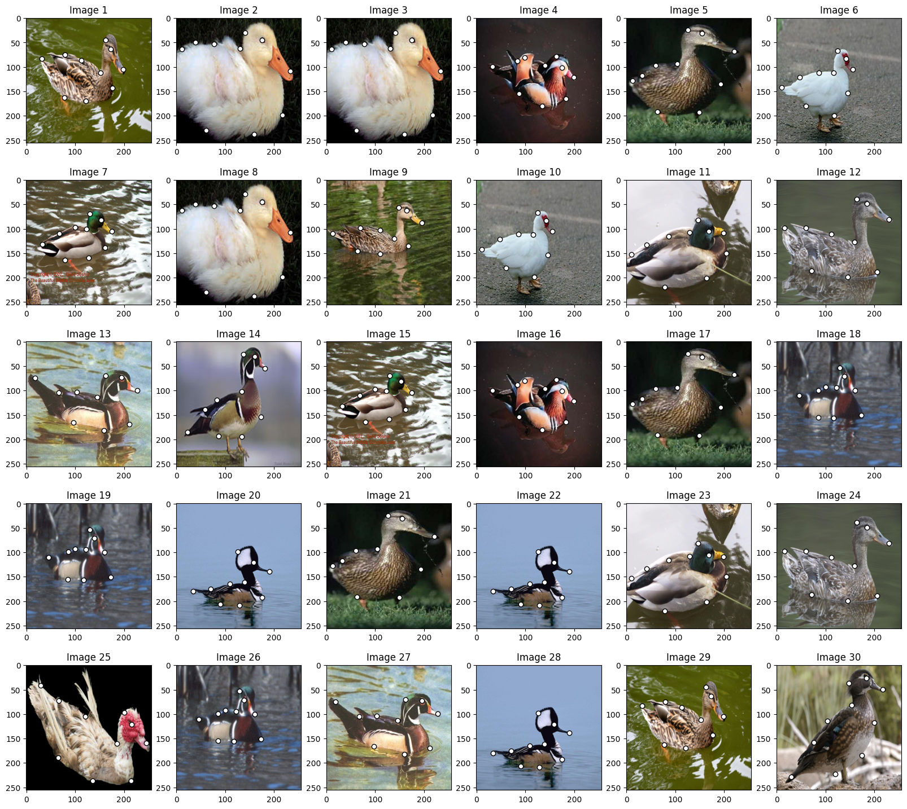

import os
import time
import math
import copy
import itertools
import numpy as np # numpy backend
import pygmtools as pygm
import matplotlib.pyplot as plt # for plotting
import scipy.io as sio # for loading .mat file
import scipy.spatial as spa # for Delaunay triangulation
from PIL import Image
from matplotlib.patches import ConnectionPatch # for plotting matching result
pygm.set_backend('numpy') # set default backend for pygmtools
obj_resize = (256, 256)
n_images = 30
n_outlier = 0
img_list = []
kpts_list = []
n_kpts_list = []
perm_list = []
bm = pygm.benchmark.Benchmark(name='WillowObject',
sets='train',
obj_resize=obj_resize)
while len(img_list) < n_images:
data_list, gt_dict, _ = bm.rand_get_data(cls='Duck')
for data in data_list:
img = Image.fromarray(data['img'])
coords = sorted(data['kpts'], key=lambda x: x['labels'])
kpts = np.array([[kpt['x'] for kpt in coords],
[kpt['y'] for kpt in coords]])
perm = np.eye(kpts.shape[1])
img_list.append(img)
kpts_list.append(kpts)
n_kpts_list.append(kpts.shape[1])
perm_list.append(perm)
# Import necessary libraries
import numpy as np # Import NumPy for numerical operations and array handling
from PIL import Image # Import PIL (Python Imaging Library) for image processing
import scipy.io as sio # Import SciPy's IO module for reading .mat files
# Define target size for image resizing (256x256 pixels)
obj_resize = (256, 256)
# Load duck images from the Willow Object Dataset
# These images will be used for feature matching
img1 = Image.open('./data/WillowObject/WILLOW-ObjectClass/Duck/060_0000.png') # Load first duck image
img2 = Image.open('./data/WillowObject/WILLOW-ObjectClass/Duck/060_0010.png') # Load second duck image
# Load keypoint annotations from corresponding .mat files
# 'pts_coord' contains the coordinates of manually annotated keypoints for each image
# Convert the MATLAB format to NumPy arrays for easier processing
kpts1 = np.array(sio.loadmat('./data/WillowObject/WILLOW-ObjectClass/Duck/060_0000.mat')['pts_coord']) # Keypoints for first image
kpts2 = np.array(sio.loadmat('./data/WillowObject/WILLOW-ObjectClass/Duck/060_0010.mat')['pts_coord']) # Keypoints for second image
# Scale keypoint coordinates to match the new image dimensions
# This ensures keypoints remain aligned when images are resized
kpts1[0] = kpts1[0] * obj_resize[0] / img1.size[0] # Scale x-coordinates of first image keypoints
kpts1[1] = kpts1[1] * obj_resize[1] / img1.size[1] # Scale y-coordinates of first image keypoints
kpts2[0] = kpts2[0] * obj_resize[0] / img2.size[0] # Scale x-coordinates of second image keypoints
kpts2[1] = kpts2[1] * obj_resize[1] / img2.size[1] # Scale y-coordinates of second image keypoints
# Resize both images to the target size (256x256)
# Using BILINEAR interpolation for smooth resizing
img1 = img1.resize(obj_resize, resample=Image.BILINEAR) # Resize first image
img2 = img2.resize(obj_resize, resample=Image.BILINEAR) # Resize second image
def plot_image_with_graph(img, kpt, A=None):
"""
Function to visualize an image with keypoints and optional graph connections
Parameters:
- img: Input image to be displayed
- kpt: Keypoints array with shape (2, N) where N is number of keypoints
- A: Optional adjacency matrix for drawing connections between keypoints
"""
# Display the input image
plt.imshow(img)
# Plot keypoints as white dots with black edges
plt.scatter(kpt[0], kpt[1], c='w', edgecolors='k')
# If an adjacency matrix is provided, draw connections between keypoints
if A is not None:
# Iterate through non-zero elements in adjacency matrix
for idx in np.nonzero(A, as_tuple=False):
# Draw black lines between connected keypoints
# idx[0] is start point index, idx[1] is end point index
plt.plot((kpt[0, idx[0]], kpt[0, idx[1]]), # x-coordinates of line
(kpt[1, idx[0]], kpt[1, idx[1]]), # y-coordinates of line
'k-') # black solid line style
# Create a figure with specific size (8 inches width, 4 inches height)
plt.figure(figsize=(8, 4))
# Create first subplot for Image 1
plt.subplot(1, 2, 1) # 1 row, 2 columns, first position
plt.title('Image 1') # Set title for first subplot
plot_image_with_graph(img1, kpts1) # Plot first image with its keypoints
# Create second subplot for Image 2
plt.subplot(1, 2, 2) # 1 row, 2 columns, second position
plt.title('Image 2') # Set title for second subplot
plot_image_with_graph(img2, kpts2) # Plot second image with its keypoints
plt.savefig('./images/duck_matching.png',dpi=700)
plt.show()

def plot_image_with_graph(img, kpt, A=None):
plt.imshow(img)
plt.scatter(kpt[0], kpt[1], c='w', edgecolors='k')
if A is not None:
for idx in np.nonzero(A):
plt.plot((kpt[0, idx[0]], kpt[0, idx[1]]), (kpt[1, idx[0]], kpt[1, idx[1]]), 'k-')
plt.figure(figsize=(20, 18))
for i in range(n_images):
plt.subplot(5, n_images // 5, i + 1)
plt.title('Image {}'.format(i + 1))
plot_image_with_graph(img_list[i], kpts_list[i])
# plt.savefig('image')
# plt.close()
